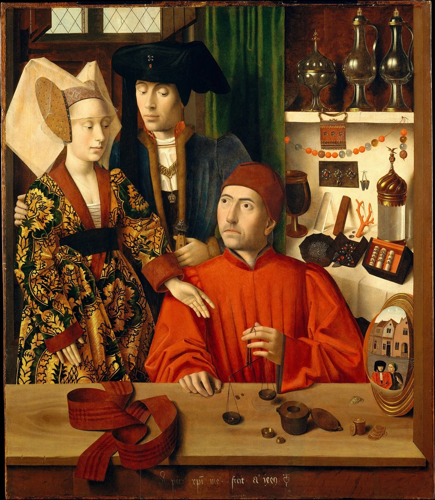
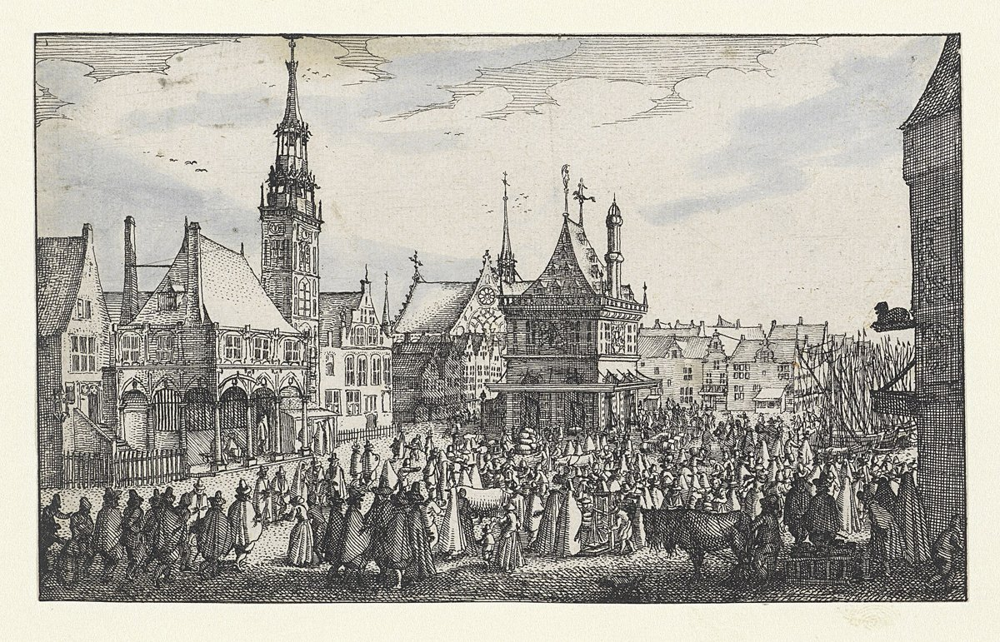
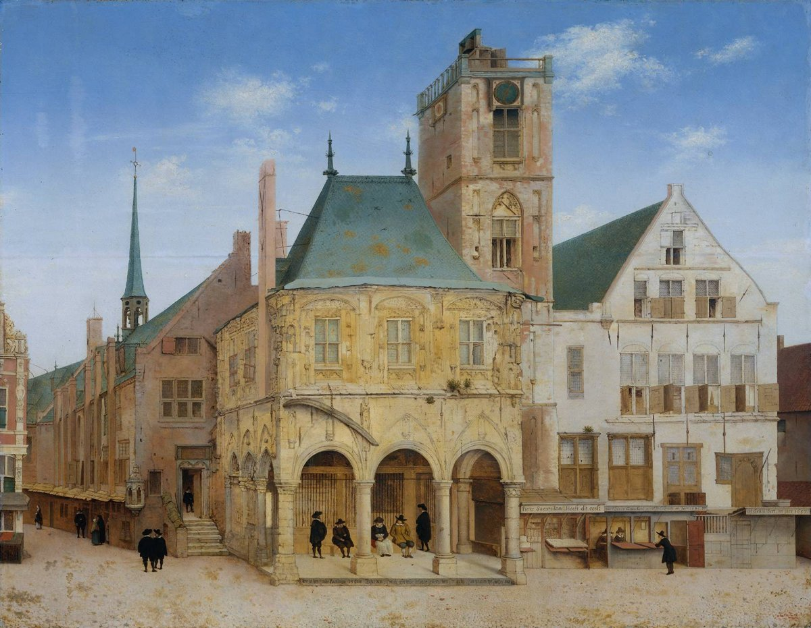
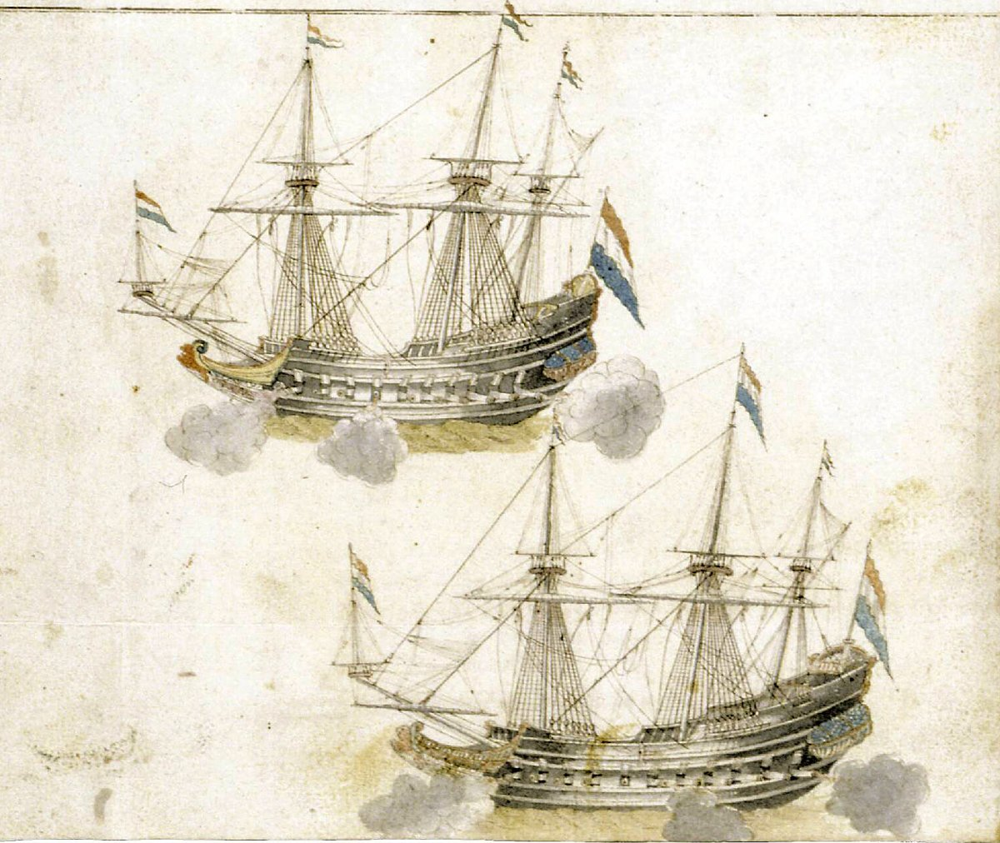

Abres la aplicación del banco y ves un número. No ves monedas ni lingotes, y te basta para quedarte tranquila. Hace cuatro siglos, un mercader de Ámsterdam se conformaba con algo muy parecido: una línea escrita en un libro enorme. Lo que le pasó a aquel libro explica cuánto aguanta la confianza.
En un artículo anterior dejamos a los orfebres de Londres con una pregunta en el aire: ¿qué pasa cuando hay más papeles que oro? Hoy empezamos justo ahí.
El orfebre que hizo cuentas
Lo que pasó en el taller del orfebre ya lo contamos en «Cuando el oro se convirtió en dinero» y en «Cuando el dinero pasó a basarse en la confianza». Imagínalo así: en la caja hay diez onzas de oro y por la calle circulan veinte recibos. Como nadie viene a por todo a la vez, nadie lo nota. Así nació, en pequeño, el patrón de confianza: creer en un papel porque crees en quien lo firma.

Aquello ocurrió en Londres a mediados del siglo XVII, sobre todo después de 1640, cuando el rey Carlos I se quedó con el dinero que los comerciantes guardaban en la Torre de Londres. Para ver qué pasa cuando esa misma promesa se hace grande, hay que cruzar el mar y retroceder unas décadas, hasta Ámsterdam.
Ámsterdam, 1609: un libro en lugar de una bolsa
A principios del siglo XVII, por Ámsterdam pasaban monedas de medio mundo. Muchas venían limadas o mezcladas con metales más baratos. Imagina que cada vez que te dan el cambio tuvieras que mirar cada moneda con lupa para saber si es buena.
En 1609, la ciudad creó su propio banco: el Banco de Cambio de Ámsterdam, la Wisselbank. El mercader llevaba sus monedas de oro y plata, el banco comprobaba que eran buenas y apuntaba la cantidad en un gran libro de cuentas. Para pagar a otro mercader, el banco pasaba la cifra de una página a otra, sin cargar sacos por la calle. El dinero cambiaba de dueño sin mover una sola moneda. Es lo que hoy llamamos una transferencia.

No era la primera vez que se hacía algo así. Barcelona ya había abierto su Taula de Canvi en 1401, y Ámsterdam se inspiró en bancos públicos italianos como el de Rialto, en Venecia. Pero el de Ámsterdam acabaría siendo el más famoso de todos.
Y había una regla de oro, nunca mejor dicho: el banco solo debía guardar metal. Por cada florín escrito en el libro tenía que haber una moneda en la cámara. Justo lo contrario del orfebre que prestaba a escondidas. Funcionó tan bien que Ámsterdam se convirtió en la gran plaza financiera de Europa.
1672: el día en que todos preguntaron
En 1672, el que los neerlandeses llaman el «año del desastre», los ejércitos franceses entraron en el país y tomaron Utrecht. El miedo corrió más que ellos. La gente se agolpó ante el banco, en el ayuntamiento de la plaza del Dam, para pedir sus monedas. En solo dos semanas, el banco perdió alrededor de un tercio de sus depósitos.
Entonces los responsables hicieron algo sencillo y valiente: abrieron la cámara. Allí estaban las monedas, todavía ennegrecidas por el incendio que había quemado el viejo ayuntamiento veinte años antes. Todo el que pidió lo suyo lo cobró. Y en cuanto se supo, la carrera se acabó.

La confianza aguanta hasta que alguien pregunta. Aquella vez, la respuesta fue «sí».
Las monedas que salían por la puerta de atrás
Pero el libro y la cámara no siempre contaron la misma historia. Desde muy pronto, el banco prestó con discreción, y con el tiempo lo hizo sobre todo a dos clientes muy especiales: el propio ayuntamiento y la Compañía de las Indias Orientales, la gran empresa de barcos que traía especias de Asia. Muchos eran préstamos cortos que se devolvían, y casi nadie lo sabía.
Tanto se confiaba en él que, en 1776, el economista Adam Smith escribió que en Ámsterdam ningún artículo de fe estaba mejor asentado que este: por cada florín del banco había otro en oro o plata en su tesoro.
Pero entre 1780 y 1784, la guerra con Inglaterra hundió el comercio de la Compañía. Sus barcos fueron capturados o quemados, y los préstamos dejaron de volver. El banco siguió prestándole. El metal de la cámara bajó de 17,6 millones de florines en 1776 a 7,8 millones en 1783.
Y para seguir prestando sin que entrara metal nuevo, el banco hizo algo más: compraba monedas pagándolas con apuntes nuevos en su libro. Escribía florines que no tenía en la cámara. Hacia 1784, cada florín del libro estaba respaldado solo por un tercio en metal: por cada diez monedas en la cámara, el libro prometía unas treinta. Era el truco del orfebre, ahora en grande.

Esa es la mancha invisible: una mancha que nadie ve desde la ventanilla. El libro seguía diciendo lo mismo de siempre, pero la cámara ya contaba otra cosa. Primero se prometió más de lo que había. El miedo vendría después.
Cuando se abrió el libro
El mercado lo olió antes de saberlo. Durante generaciones, el florín del banco se había pagado algo más caro que las monedas de la calle, como quien paga un poco más por una marca de fiar. A finales de 1790, ese plus desapareció.
En 1795 llegaron los ejércitos de la Revolución francesa. Las nuevas autoridades ordenaron hacer públicas las cuentas del banco, y todo el mundo vio lo poco que quedaba en la cámara. El florín del banco llegó a valer casi un 30 % menos que las monedas de la calle. El banco sobrevivió, malherido, veinticinco años más. En 1820 cerró sus puertas para siempre.
La confianza aguanta hasta que alguien pregunta. Y la respuesta depende de lo que haya de verdad en la caja.
En 1672 se preguntó y había monedas. En 1795, préstamos que nunca volvieron. El mismo banco, la misma promesa; solo había cambiado lo que nadie veía. El miedo de 1795 no abrió el agujero: lo hizo visible. Llevaba más de diez años en la cámara.
2026: el mismo gesto
Del taller del orfebre al gran libro de Ámsterdam, la historia siguió siempre el mismo orden: primero, más promesas que metal; después, el miedo. Y el miedo corrió como corre siempre, de boca en boca, hasta la puerta del banco.
Hoy abrimos una aplicación, vemos un número y nos quedamos tranquilos, igual que aquel mercader con su línea en el libro. Creemos en el número porque creemos en quien lo apunta.
Cuatrocientos años separan a los orfebres de Londres y al banco de Ámsterdam del banco de tu barrio, y el papel que guardaba el oro es hoy la pantalla que guarda tu dinero. Todo cambió: el metal, el papel, la forma de pago. Solo el miedo y el hambre se sienten igual.
Esta historia forma parte de la serie «La historia del dinero». Si quieres ir aún más atrás, en «Prestar a los dos bandos» contamos cómo, en 1337, dos bancos de Florencia confiaron en la palabra de un rey.
Fuentes
- Orfebres de Londres, depósitos y préstamos en la segunda mitad del siglo XVII: Banco de Inglaterra, «The Bank of England note: a short history», Quarterly Bulletin, 1969. https://www.bankofengland.co.uk/quarterly-bulletin/1969/q2/the-bank-of-england-note---a-short-history, consultado entre el 20 y el 21 de noviembre de 2026.
- Carlos I y el dinero de los mercaderes en la Torre de Londres (1640): Dictionary of National Biography, «Backwell, Edward» (Wikisource). https://en.wikisource.org/wiki/Dictionary_of_National_Biography,_1885-1900/Backwell,_Edward · British History Online, «The Bank of England», Old and New London, vol. 1. https://www.british-history.ac.uk/old-new-london/vol1/pp453-473, consultado entre el 20 y el 21 de noviembre de 2026.
- Fundación del Banco de Ámsterdam en 1609, monedas limadas, modelo de Rialto, regla de guardar solo metal, plaza financiera, sede en el ayuntamiento e incendio de 1652, 1672 (cámara abierta, monedas ennegrecidas por el incendio), Adam Smith, guerra de 1780-1784, metal de 17,6 a 7,8 millones, compra de monedas con apuntes nuevos (creación de dinero), respaldo de un tercio en 1784, agio negativo en 1790-1791, revelación de 1795 con caída del agio a casi el −30 % y cierre en 1820: Jon Frost, Hyun Song Shin y Peter Wierts, «An early stablecoin? The Bank of Amsterdam and the governance of money», BIS Working Paper n.º 902, 2020. https://www.bis.org/publications/working-paper-902-early-stablecoin-bank-amsterdam-and-governance-money.pdf, consultado entre el 20 y el 21 de noviembre de 2026.
- Corrida de 1672 (34 % de los saldos en dos semanas), préstamos a la Compañía y a la ciudad, y nuevo ayuntamiento del Dam como sede del banco: Stephen Quinn y William Roberds, «How Amsterdam Got Fiat Money», Federal Reserve Bank of Atlanta, Working Paper 2010-17. https://fraser.stlouisfed.org/files/docs/historical/frbatl/wp/frbatl_wp_2010-17.pdf, consultado entre el 20 y el 21 de noviembre de 2026.
- Toma de Utrecht y carrera de junio de 1672: Historisch Nieuwsblad, «De Amsterdamse Wisselbank (1609-1820)». https://www.historischnieuwsblad.nl/de-amsterdamse-wisselbank-1609-1820/, consultado entre el 20 y el 21 de noviembre de 2026.
- Taula de Canvi de Barcelona (1401): Gran Enciclopèdia Catalana, «taula de canvi». https://www.enciclopedia.cat/gran-enciclopedia-catalana/taula-de-canvi · Generalitat de Catalunya, «Ordinaciones de la Mesa de Cambio de Barcelona». https://patrimoni.gencat.cat/es/catalunyapaisdarxius/recurso-digital/recurso/document/ordinacions-de-la-taula-de-canvi-de-barcelona/, consultado entre el 20 y el 21 de noviembre de 2026.
- Imágenes, de Wikimedia Commons: cabecera, Gerrit Berckheyde, «Het stadhuis op de Dam», 1672, Rijksmuseum SK-A-34 (dominio público) https://commons.wikimedia.org/wiki/File:Het_stadhuis_op_de_Dam_in_Amsterdam_Rijksmuseum_SK-A-34.jpeg · Petrus Christus, «A Goldsmith in his Shop», 1449, Metropolitan Museum (CC0) https://commons.wikimedia.org/wiki/File:A_Goldsmith_in_his_Shop_MET_DT711.jpg · Rijksmuseum RP-P-AO-21-5-3, vista del Dam, 1611 (CC0) https://commons.wikimedia.org/wiki/File:Gezicht_op_het_Oude_Stadhuis,_de_Wisselbank,_de_Nieuwe_Kerk_en_de_Waag_op_de_Dam_te_Amsterdam_Vier_gebouwen_in_Amsterdam_(serietitel),_RP-P-AO-21-5-3.jpg · Pieter Saenredam, «Het oude stadhuis te Amsterdam», 1657 (dominio público) https://commons.wikimedia.org/wiki/File:Saenredam_-_Het_oude_stadhuis_te_Amsterdam.jpeg · Johannes Vingboons, barcos Mauritius y Zuid-Holland, hacia 1640 (dominio público) https://commons.wikimedia.org/wiki/File:VOC_ships_Mauritius_and_Zuid-Holland,_1628.jpg, consultado entre el 20 y el 21 de noviembre de 2026.